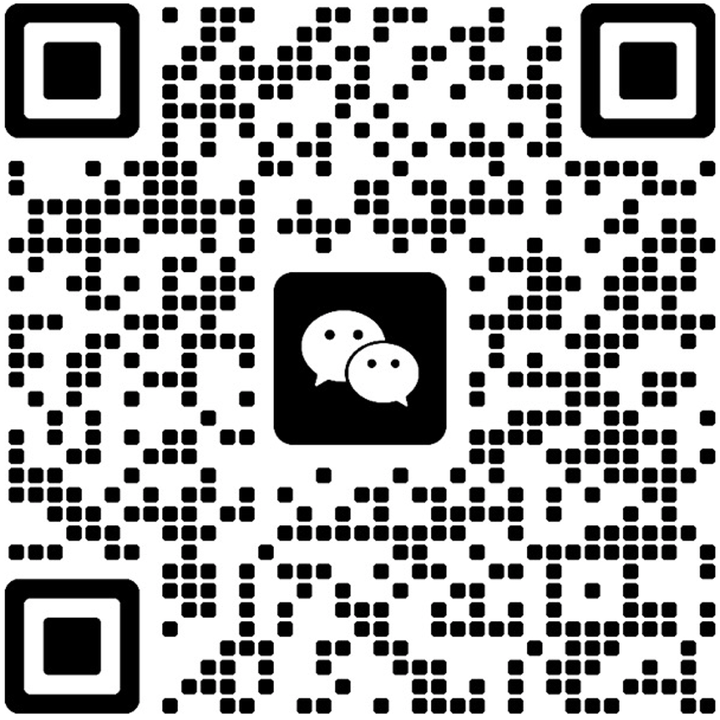

01
Marketing Agency
Promoting Chinese machinery and construction equipment manufacturers with clear product positioning and buyer-focused communication.
Marketing & purchasing agent
Innovegic Ltd promotes Chinese manufactory machinery and construction equipment to distributors, contractors and project buyers across Europe, Australia, the USA and Canada.
What we do
We support Chinese manufacturers seeking overseas visibility and international buyers looking for suitable equipment supply options.
Promoting Chinese machinery and construction equipment manufacturers with clear product positioning and buyer-focused communication.
Supporting overseas clients with product enquiries, supplier communication, purchasing coordination and practical sourcing support from China.
Connecting manufacturers, distributors, contractors and project buyers across Europe, Australia, the USA and Canada.
Equipment categories
Innovegic Ltd helps manufacturers and buyers communicate clearly around product capability, availability, commercial requirements and market opportunities.
Target markets
About Innovegic Ltd
Innovegic Ltd acts as a marketing and purchasing agent for machinery and construction equipment. Our role is to support business communication, product promotion and purchasing coordination between Chinese manufacturers and overseas customers.
We focus on practical, reliable cooperation — helping manufacturers present their products clearly and helping buyers identify suitable equipment supply options.
Get in touch
Contact Innovegic Ltd to discuss manufacturer representation, purchasing support, equipment enquiries or overseas market opportunities.
